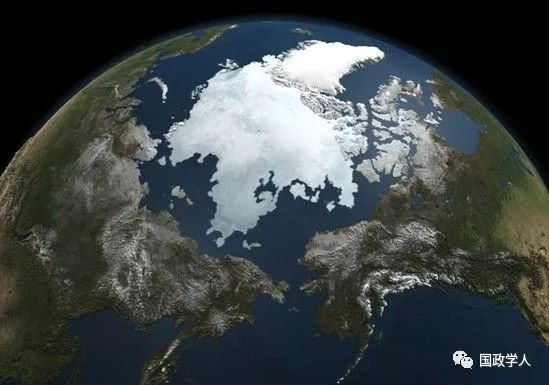

收录于合集
、
简 介
【作者】 叶艳华，黑龙江大学历史文化旅游学院副教授，历史学博士。
【期刊】 《东北亚论坛》2018年第6期， 第92-104页
【整理】 周雨橙
【校对】 陈成龙、高嘉琳

内容摘要
作者认为，对东亚国家来说，北极地区具有重要的经济、科研、交通和军事价值。近年来，东亚国家通过定期开展北极科考活动、积极参与北极能源勘探与开发、不断谋求加入北极国际组织以及拥护并参与重新修订北极法律等方式，努力增强东亚国家参与北极地区事务的影响力，加大参与北极事务的力度，谋求北极事务话语权。北极地区严酷的气候条件和特殊的地理位置导致油气勘探开发成本过高，再加上开采技术不成熟、生态破坏和法律制度缺陷等障碍，使北极国家在开发北极上难以拒绝非北极国家的参与，东亚国家在人力、资金、技术以及市场等方面都具有较大优势，因此在北极开发中，东亚国家和北极国家之间开展互利合作是发展的必然。
正 文
全球气候变暖导致北极海冰不断融化，北极地区自然资源的开采和利用、北冰洋航线的开通成为可能，北极再次成为地缘政治的热点已是不争事实。近年来，北极大陆架已经成为世界主要国家经济和地缘政治角逐的主要区域，北极地区已经形成为四个北极利益圈。北极第一利益圈由俄罗斯、加拿大、美国、挪威、丹麦北冰洋沿岸五国构成，也被称为北极国家，具有北极资源优先开采权。冰岛、瑞典和芬兰构成北极第二利益圈，是没有北冰洋出海口的北极地区国家，也被称为亚北极国家，与第一利益圈国家一起形成环北极国家。北极第三利益圈主要有北大西洋公约组织、欧盟以及北欧国家组织构成，不久前开始积极加入北极的竞争中。另外，以中国、日本和韩国等为代表的东亚国家，作为非北极国家对开发北极也表现出极大兴趣，成为积极谋求北极利益的第四个利益圈。
中国、日本、韩国均是北半球国家，北极地区的大气环流变化对东亚国家的气候、生态环境系统、社会经济活动会产生重要影响，因此北极事务事关重大。本文试图就北极地区对东亚国家中国、日本、韩国社会发展的意义、三国北极战略实现的路径以及与俄罗斯等北极国家开展科研和国际合作前景等问题进行探讨。文中东亚国家专指中国、日本和韩国。
1 **北极地区对于东亚国家的意义
**
2018年1月26日，中国政府发表《中国的北极政策》白皮书，阐述中国与北极的关系、中国的北极政策目标和基本原则、中国参与北极事物的主要政策主张等。韩国早于中国，于2013年就已制定《北极综合政策促进计划》，指导韩国参与北极事物。日本也于2015年制定国家层面的《日本北极政策》，其在北极地区的利益显而易见。对于东亚国家来说，北极地区具有重要的经济、科研、交通和军事价值。
（一）北极地区蕴藏丰富的油气资源
中国、日本和韩国均为大的能源需求国。根据国际能源署统计，2014年中国进口石油3亿800万吨（世界第二大能源进口国），日本进口石油1亿6500万吨（位列第四），韩国进口石油1亿2600万吨（位列第五）。2015年，日本进口天然气1170亿立方米，成为最大的天然气进口国。中国进口天然气560亿立方米（位列世界天然气进口国第四位），韩国进口天然气430亿立方米（位列第六位）。日本和韩国石油天然气几乎全部依赖进口。2015年，中国进口的石油份额占全部消耗量的63.5%，预测到2020年这一比例将上升至76%。中国进口天然气份额占全部消耗量的30%，预测到2020年将上升至40%。
因此，蕴藏丰富油气资源的北极地区是东亚国家不可多得的资源发展空间，可以满足其不断增长的能源需求。探测数据显示，北极蕴藏900亿桶石油、47.3万亿立方米天然气和440亿桶凝析油，占世界未探明碳氢化合物储量的25%。联合国对俄罗斯进行的矿产资源评估显示，俄罗斯矿产资源总值在300万亿美元，其中包括北极地区在内的北方地区就占据其中的70%~80%。在可预见的未来，北极地区将成为东亚国家的重要战略能源基地，尽管目前存在一定技术难度，且需要大量资金投入，但开采北极地区的油气资源仍有利可图。据测算，2006年至2030年中国对石油的需求量将增加两倍，每天达到1500万桶。因此，为保持经济的高速度增长，中国对获取北极能源极为关注。2011年中国科学院的一份报告中指出，开发极地矿藏可以满足国家能源需求的50%~60%。为了解决能源问题，中国正在制定能源发展战略，吸引外资和最大限度地提高能源生产力，努力实现能源生产方式的多样化和国外能源供应的多样化。同为东亚国家的日本，自福岛第一核电站事故后，也只能向国家提供30%的核能，位于地震带的大多数核电站已经关闭或者即将关闭，日本正在计划发展太阳能、风能和潮汐能等新型能源代替核动力能源。但中短期日本为恢复和发展经济，提高了对石油和天然气等传统能源的需求量，目前日本80%的石油均来自近东，北极丰富的油气资源同样引起日本的关注。
（二）北极地区稀有金属储量巨大
北极地区是一个巨大的资源宝库。据估计，阿拉斯加与西伯利亚地区煤炭资源储量丰富而且品质高，而西伯利亚地区约4000亿吨的储量占到了世界煤炭总储量的9%。此外已探明，环北极地区蕴藏丰富的稀土金属、稀有金属、矿石和其他具有战略意义的矿物原料，包括磷灰石精矿、镍、钴、铜、钨、钛、铬、锰、准白金、锡、汞、金、银和金刚石等。尤其是俄罗斯北极地区有蕴藏丰富矿物的镍矿区，镍矿区伴生大量的铜和铂族金属，甚至还有金、银、硒、碲等稀有金属，尽管在极地条件下开采和生产成本高，但该地区的矿物价值仍然很高。
近年来，中国积极开展与环北极国家的经济贸易合作，包括从挪威进口铁矿石、与丹麦合作开发格陵兰岛的地下矿藏等，其中，格陵兰岛蕴藏着极为丰富的稀土金属、铀、铁矿石、铅、锌、石油和宝石。因此，北极地区对东亚国家开放上述资源，将成为东亚国家工业长期发展的保障。
（三）北极丰富的生物资源对东亚国家意义重大
北极地区和北冰洋近海岛屿、海域生活着包括北极熊、北极狐、独角鲸、虎鲸、海象、白鲸等大量的独特海洋生物和鱼类，超过150种鱼类生活在北极和副北极地带水域，大西洋鳕、鲱鱼、黑线鳕、比目鱼等鱼类对发展渔业尤为重要。全球变暖也会改变冷水鱼类栖息地，根据预测，至2020年全球超过37%的鱼类将生活在北极海域。这些鱼类资源是北极沿岸国家食品与经济收入的重要来源。根据《联合国海洋法公约》，中日韩三国均享有在北冰洋海域的捕捞权。从现有海洋捕捞技术和经济效益来看，将北冰洋海域纳入远洋捕捞范围，将进一步拓展中国、韩国的生产发展空间。自古以来，渔业和海产品加工就是日本重要支柱产业。至19世纪中期，日本渔船捕捞的范围已经由日本海和周边海域扩展至鄂霍次克海和白令海海域，甚至亚洲北方的北冰洋海域也经常有日本远洋捕捞船出没。但自福岛核电站事故后，日本沿海和毗连水域的鱼类由于受到核辐射而不能再被加工成海产品，故日本对开发北极地区的生物资源最为关注，很多水产资源均来自北极。
（四）北极航道正在形成新的国际运输走廊
北极航道是指穿越北冰洋连接太平洋和大西洋的海上航道，主要包括“东北航道”和“西北航道”。东北航道西起北欧和西欧港口，向东绕过白令海峡抵达俄罗斯远东海港符拉迪沃斯托克，也被称为北方海路、北方航线、北海航线。西北航道东起加拿大和美国东海岸，向西穿过加拿大北极群岛水域，沿阿拉斯加北部海域直到戴维斯海峡。据美国国家航空航天局数据显示，北极海冰的面积和厚度在过去几十年里迅速下降，1981年至2010年海冰面积以每十年13.2%的速度在减少，2017年9月的海冰覆盖范围为464万平方公里，比1981年减少近一半，目前仅占北冰洋面积的30%。随着北极海冰融化速度加快，科学家们预测，在未来的20~30年内北冰洋将实现夏季无冰年，北极航道开通将成为可能，亚太地区与欧洲的海运航线将大幅缩短。
对于东亚国家来说，取道北方航线到欧洲的航行时间比途径苏伊士运河可节省30%~40%，而且可以免受索马里海盗的侵扰，极具经济前景。2010年，中国石油天然气集团公司与俄罗斯主要承运公司合资舰队公司（Совкомфлот）签署协议，建立战略合作伙伴关系，北极地区将成为中国大部分能源开采的目的地。此外，中国石油天然气集团公司计划与摩尔曼斯克港特别经济区在船舶制造、船舶维修等领域开展合作。
日本和韩国对北方航线也有极大兴趣。从日本横滨港经苏伊士运河至荷兰鹿特丹港航程为20742公里，而沿北极航线路程将极大缩短至12038公里，航行时间也将由南方航线的40天缩减至25天，极大减少船舶燃料消耗，北极航线优势十分明显。1993年起，日本海洋政策研究基金会作为日本北极相关问题研究的中心，负责各相关机构协调工作和制定有关北极政策。2002~2006年，该基金会制定的“东方欧亚大陆稳定发展保障纲领-Ⅱ”，重点关注北方航线的东段、西伯利亚和俄罗斯远东地区、鄂霍次克海的海路开发问题。纲领除涉及海路开发的技术难题外，还包括北方航线开发的国际法和军事战略等问题。目前，海洋政策研究基金会正在着手制定日本的北方航线研究规划，保障日本成为国际北部海域航线计划的重要一环。
2009年，韩国成立第一家北极海域航线研究中心，对韩国利用北极海域航线的经济可行性以及相关法律、技术等议题展开研究，并取得初步研究成果。研究中心与韩国极地研究所已经完成北极海域考察，并计划与俄罗斯建立合作关系，进行极地海域航线的相关教育培训，同时与日本有关部门开展北极海域航线的共同研究。而西北通道对东亚国家同样重要。经过西北通道，东亚国家既可以抵达欧洲，也可以直达美国和加拿大东部海岸。从北美东海岸到亚洲，穿越北极航线，要比经过巴拿马运河抵达亚洲的航线缩短6500公里，运输成本也要低大约四成。
（五）东亚国家高度关注全球气候变化
北极的大气、海洋、生态、陆地和社会的变化对北半球乃至于全球的气候变化和社会经济发展产生重大的影响，北极海冰融化带来的温室效应将加剧全球气候的变化。在全球气候变化的大背景下，北极地区的种种变化已经不仅仅是北极国家的问题，而是关乎全球气候治理的问题。
中国、日本、韩国是北半球国家，也是西太平洋沿岸重要的国家，三国环境气候的变化与北冰洋海洋、生态气候等系统的变化存在内在关联。因此，关注素有“天气百科”之称的北极地区的气候变化是东亚国家科学协会关注的首要问题。中国、日本和韩国为此成立各类极地研究所，监控北极地区及周边环境变化。目前，日本民间企业已经造出名为“WNI”的超小型实用卫星，用于观测北冰洋温室效应下的海冰状况和探测北极航线。日本还将向北极地区派遣科考小组，调查北极变暖进程以及海冰冰层等状况。韩国亦将派“ARAON”号破冰船前往加拿大位于北极圈内的专属经济区开展勘探工作，调查北冰洋“可燃冰”的分布状况，研究北极永久冻土层，分析气候变化对北冰洋的影响，为韩国未来开发北极进行准备。
2
东亚国家参与北极事务的实施路径
目前，在国际法范围内，中国、日本、韩国等东亚国家无权直接进入北极大陆架开采油气资源，也不能直接影响北极政策的制定和实施，但正在通过各种渠道积极参与北极事务。在中国，包括中国极地研究中心、上海国际问题研究院海洋和极地研究中心、中国海洋大学海洋发展研究院等在内的10多所科研机构开展北极系统研究，成果显著。日本为了制定国家北极战略于2010年7月成立“日本北极会议”，同年9月外务省成立“北极作战小组”（ArcticTask
Force），负责研究和制定北极政策等事务。韩国也在密切关注北极地区的相关事务。
（一）定期开展北极地区科学考察，不断提高极地科考水平
1995年中国极地研究重心开始从南极转向北极，并于当年以民间集资的方式对北极地带进行科学考察，由25名科学家、记者组成的考察团从加拿大进入北极地区，从冰面徒步到达北极点。1999年起，中国定期开展北极海冰结构和融化动态、海洋学、生物圈、大气层、生态学、气候变化对经济活动产生的影响以及天气监控等北极科考活动。截至2012年9月，已经成功开展了5次北极科学考察，尤其2012年7月2日至9月28日进行的第五次科考取得多项突破：首次实现由北极高纬度航线穿越北冰洋，首次成功访问北极国家，首次布放气象观测系统，首次成功进行冰站作业。2004年，中国在斯匹茨卑尔根群岛建立了第一个“黄河”科学考察站，中国已经成功在“黄河”站使用自主研制的“北极”型深水机器人潜入水下50米，进行了8次水下研究。2008年起，“黄河”站开始使用中科院沈阳自动化研究所研制的现代化水下机器人，可潜入水深100米处。为了定期进行北极科考，中国于1993年从乌克兰购进目前世界上最大的柴油破冰船，取名“雪龙”号，设施改造后正式投入极地的科考工作。2009年，国务院决定自主建造破冰船，该破冰船设计航行2万海里，能够通过1.5米厚的冰层，设计有深潜箱和水下机器人，主要用于海洋环境和海底表面的研究。
在北极科考领域，中国积极尝试与俄罗斯开展合作，并就共同建立极地科考站、中国船只可以自由通航北方海路的可能性进行多次商讨。2012年10月28日，俄罗斯科学院科拉科学中心地质所与中国地质科学院签署科学合作协议，在科技信息交流、科研项目合作、共同举办学术研讨会以及野外地质考察等领域展开合作，尤其围绕超深井钻探、探矿以及开采铬矿、铜镍矿和金矿展开深入合作。2017年7月20日至10月10日，中国完成第八次北极科学考察，实现中国首次环北冰洋科学考察，首次穿越北极中央航道，首次完成西北航道航行，首次在北极和亚北极地区开展海洋垃圾监测等，取得了多项突破性成果。
日本国立极地研究所是日本极地研究领域的主要科研机构之一，作为大学共同利用中心，国立极地研究所成立于1973年，2004年改组为独立研究机构，主要从事有关极地气候观测、生物学和地理学领域的科学研究工作。1990年，国立极地研究所成立北极环境研究中心，从事以北极海冰为中心的海洋大气状况和海洋环境变化等问题的研究。1991年在挪威的协助下，国立极地研究所在斯匹茨卑尔根群岛设立科学考察站，监测大气和辐射情况。国立极地研究所还积极参加国际极地年的国际科学计划工作。1993年至1999年期间，日本海洋政策研究财团与挪威南森研究所、俄罗斯中央海洋船舶设计研究所共同开展“国际北极航道”调研项目，并于2000年推出《北极航道：连接欧洲与东亚的最短航道》调研报告，受到好评。此后日本继续围绕北极航道开展科学考察和调研工作。
韩国北极科学研究工作起步较晚，但进展迅速。自1999年起，韩国极地研究者开始与日本、中国学者共同开展极地海洋科考工作。2001年，韩国成立北极科学委员会，并于第二年4月加入国际北极科学委员会（IASC），随后在斯匹茨卑尔根群岛建立茶山考察站，进行北极地区气候动态和海洋植物生态学研究工作。2009年，韩国自主研发建造了“全洋号”破冰船，北极科考进入新时期。作为国际北极科学委员会成员国，2011年韩国成功组织北极科学高峰周。韩国官方甚至将北极研究计划与国家安全问题结合起来，将建造破冰船和发展北极科研设施作为北极区域战略重要组成部分。在2013年制定的《北极综合政策促进计划》中，韩国政府提出要进一步加强北极科学研究的基础设施建设，加大针对气候变化等问题的研究，使北极科研向更多的领域扩展。目前，韩国共有七个部门在从事北极问题研究，即外交部、科技部、贸易部、工业和能源部、环境部、国土、基础设施和运输部、海洋事物与渔业部和韩国气象局。2017年，韩国“Araon”号破冰船完成了近北极圈北极海域为期两个月的航行，在白令海和楚科奇海域开展了科考工作。期间，与俄罗斯和日本合作制定鄂霍次克海天然气勘探计划，并绘制白令海海区图。
（二）积极参与北极能源勘探与开发，强化东亚国家在北极地区的经济存在
2010年底，中国石油天然气集团公司与俄罗斯石油公司签署合作备忘录，商讨联合勘探俄罗斯北极地区油气矿藏可能性的相关事宜，俄罗斯将要通过北极航线向中国输送石油和天然气。包括中国石油天然气集团公司、中国石油化工集团公司和中国海洋石油总公司在内的中国三家大型石油公司都在计划参与俄罗斯北极地区油气矿藏的开采，积累深水钻探的经验技术。2013年，俄罗斯颁布《俄罗斯联邦外交政策理念》，强调要促进北极地区国际合作，北极
国际合作步伐加快。2015年5月，俄联邦政府与中国政府签订《中俄东线管道天然气合作项目备忘录》。2017年年底，由中石油和中国丝路基金参股的俄罗斯亚马尔- 涅涅茨自治区液化气厂建设项目正式投产，外国公司参与建设，带来的不仅是资金和技术，还有巨大的销售市场。
中国参与北极能源开采的另一重要地区是巴伦支海区域，中国企业已经成功进入巴伦支海。目前，丹麦正在成为中国向北极地区进行商业和战略渗透的重要走廊。2010年丹麦向中国的出口额为26亿美元，较上一年增长17%，而中国向丹麦的出口额为69亿美元，增长25%，并逐年呈递增趋势。丹麦自治领格陵兰岛地下矿藏极为丰富，克瓦年费利德（Кваненфельде）稀土矿蕴藏的稀土金属储量可以满足世界需求量的20%。中国中钢集团公司、中国交通建设股份有限公司和内蒙古包钢稀土高科技股份有限公司在格陵兰都有投资，在克瓦年费利德稀土矿藏开采中获得了巨大利润。伴随中国在格陵兰投资的增长，中国对西北通道货物运输的需求也就愈迫切，中国企业投资挪威矿物开采初见成效。此外，位于挪威北方芬马克郡的黑伊洛（Хейло）矿区，石油蕴藏量约1亿至3亿桶。近期中国投资有限责任公司已经成功购买了挪威法国燃气苏伊士集团公司30%的股票，并获准进入黑伊洛矿区进行开采。中国油气企业为积累深水钻探经验技术，还欲与芬兰道达尔油气公司（Total）和挪威国家石油公司（Hy⁃droStatoil）开展合作。通过上述投资项目，中国企业在巴伦支海的地位不断巩固。
日本也在寻求与北极国家开展合作，共同开发北极能源。2010年11月，日本与加拿大组织联合勘探队，在加拿大波弗特海岸进行了甲烷水合物和钻井钻探实验，仅用一周便成功开采天然气，再次证明加拿大北极地区油气资源蕴藏丰富。据专家估测，加拿大北极区域蕴藏的可燃冰储量可能保障加拿大未来几百年的需求。但由于气候等自然条件的限制，专家指出，从可燃冰中提取天然气的技术至少还需要10至15年的时间才能够掌握。2013年5月，日本国际石油开发公司（INPEX）与俄罗斯国营石油公司联合宣布计划开发马加丹附近的鄂霍次克海海底油田，为实现日本能源供给多元化。
而韩国除通过收购加拿大能源公司北极地区油气田股份为参与开发北极圈准备跳板外，2012年8月韩国还注资格陵兰岛参与开采油气资源。总之，鉴于北极地区目前还缺乏明确的经济开发章程，东亚国家将希望寄托于在北极大陆架获得一定的经济存在，在未来北极经济开发中占有一定优势。
（三）利用北极国际组织，寻求组织成员国支持，提高东亚国家参与北极事务的影响力
北极理事会（又称“北极俱乐部”）是目前最具效力的北极国际组织，于1996年由俄罗斯、加拿大、美国、丹麦、挪威、冰岛、芬兰、瑞典八国成立，旨在保护北极地区环境，促进北极地区在经济、社会和福利方面的可持续发展。2013年5月，在基律纳召开的北极理事会第八次部长会议上，与会代表签署基律纳宣言，强调“经济活动是北极地区人类与社会发展不可分割的部分”，决定成立专门联络小组，以促进极地商业大会（TFCBF）的组织活动。12月，北极理事会赫尔辛基会议决议将极地商业大会更名为北极经济理事会（АЭС）。2014年9月，北极理事会八个成员国的工商业代表以及北极地区原住民常住北极理事会代表在加拿大伊魁特召开会议正式成立北极经济理事会，作为北极理事会常设经济机构。北极经济理事会旨在促进北极地区经济发展，制定极北地区商业发展战略，支持北极地区中小商业发展，提高科学密集型生产的份额和建立“知识型经济”，交流北极经济发展经验等。
作为近北极国家，北极地区的气候变化和能源开发对东亚国家的气候、生态环境和社会经济发展至关重要。中国最早于2006年提出申请欲成为北极理事会观察员，2007年开始作为北极理事会特别观察员参加理事会高官会议和2009年、2011年部长会议以及2012年副部长级会议。中国还派专家参与了北极海洋环境保护工作组、北极监测与评估工作组的会议。韩国和日本也相继提出成为北极理事会的正式成员国申请，于2007年同样成为该组织“特别观察员国”。2013年5月15日，北极理事会第八次部长级会议在瑞典北部城市基律纳召开，经过激烈争论，中国、韩国、日本、意大利、新加坡被批准成为北极理事会正式观察员国。成为正式观察员国后，在讨论北极各行为准则过程中上述国家的话语权增加，同时享有项目提议权和发言权，自动拥有参与理事会事务的权利，还可以参与理事会领导下的北极监督和评估计划、可持续发展、北极动植物保护、保护北极海洋环境以及紧急、预防、准备和反应小组的工作。
中国、日本、韩国成功“晋级”正式观察员国与北极理事会北欧成员国的支持密不可分。冰岛、芬兰、瑞典等北欧国家尽管没有北冰洋出海口，但瑞典和芬兰两国在北极圈内有陆地领土，有权开采北极大陆架。在北极理事会中，上述北极国家单凭一国力量难以同美国、俄罗斯等大国抗衡，因此需要东亚国家的经济和政治支援，以便增强在北极事务中的影响力，获得北极特许权，证明自己在北极的地位。目前，无论是丹麦还是其自治领格陵兰经济实力均较弱，缺少足够资金独自开发北极矿藏。由于中国在北极存在“自然合理的经济和科学利益”，丹麦正在积极谋求与中国的合作，并成为“中国向北极地区进行经济和战略渗透的重要走廊”，两国建立起互利互惠的外交关系。中国与挪威也展开合作，向挪威提供资金，帮助挪威实践其北极纲领，并借此提高中国在北极地区的地位。中国成为北极理事会正式观察员国与挪威的支持也密切相关。
国际北极科学委员会是从事极地科学研究工作的另一重要国际组织，成立于1991年。1996年中国派代表参加国际北极科学委员会会议，并被接纳成为正式成员国。在北极科考、参与北极国际合作计划以及保护北极生物、矿产、能源、环境等方面，中国科学家们表达见解，表现积极。在2012年11月召开的国际北极科学委员会执行委员会上，中国极地研究中心主任杨惠根当选为国际北极科学委员会副主席，标志在极地研究领域中国获得“国际话语权”，中国从一个极地“弱国”正逐渐进入国际极地领域的“主流”国家。日本于1991年成为国际北极科学委员会成员国后，遂积极参与委员会活动，在发展运输系统、保护和开发北极生物资源、完善航海章程以及开展各项科学研究方面开展工作，参与北极事务的影响力不断得到提高。
（四）支持并参与北极法律法规修订，加强参与北极事务的力度
当前与北极地区直接相关的国际法主要有《联合国海洋公约》（1982）和《斯匹次卑尔根群岛条约》（1925年生效），在国际法中还缺少明确而单一的海域划界法。北冰洋沿岸国家主要以先占原则、自然延伸原则和“扇形理论”为法律依据对北极海域、北极资源行使主权。冷战结束后，在全球气候环境变化的大背景下，北极战略地位逐渐凸显，俄罗斯、加拿大等北极国家加紧争夺并控制北极资源，进而出台了一系列北极相关政策措施，但由于这些政策措施与国际法存在冲突，遭到国际社会的反对，面临许多法律困境。伴随矿产开采、油气开发、渔业捕捞、商业航运以及旅游等人类活动逐渐增多，北极地区治理机制相对滞后，法律制度缺陷凸显，北极法律法规亟待完善。
北极地区开发已经成为国际性问题。东亚国家对重新修订北极法律法规表现出极大兴趣，各自制定了重修北极法律地位的政策方针，以适应由于北极海冰融化带来的新问题、新形式。
3 北极地区国际合作发展与展望
北极地区特殊的地理位置和严酷的气候条件导致油气勘探开发成本过高，再加上开采技术不成熟、法律制度缺陷和生态破坏等障碍，使北极国家在北极开发过程中无法拒绝非北极国家的参与，东亚国家在技术、资金、人力以及市场等方面都具有较大优势，因此，北极国家和东亚国家在北极开发中的互利合作是必然趋势。
（一）与俄罗斯的合作
事实上，在与东亚国家展开合作的问题上，俄罗斯与加拿大心存芥蒂，不愿意与非北极国家分享在该地区的权力和丰富的资源。俄罗斯、加拿大在北极圈以北都有大片领土和漫长的海岸线，为了捍卫各自的北极海路，两国都反对增加北极理事会成员国数量，确立5个北极国家（俄罗斯、加拿大、美国、挪威、丹麦）的优先权，明确表示限制非北极国家和国际组织在北极地区的活动。2001年在格陵兰召开的北极理事会部长级会议上，与会代表签署文件，用于调整非北极国家成员国和组织的地位问题，并明确其在北极理事会中的权力和义务。为加强北极地区的军事力量，俄罗斯定期进行军事演习，并恢复在北极地带的战略航空飞行。为在北极地区能源争夺战中抢占先机，为大规模北极能源开发制定行业标准，最终提高非北极国家参与北极能源开发的门槛，俄罗斯吸引美国资金共同开发北极资源，2012年4月16日，俄罗斯石油公司与埃克森美孚公司签署能源合作协议，俄、美开始进入北极能源实质性合作开发阶段。
有专家预测，北极国家之间关于北极地区领土划分问题的争论、非北极国家不断向北极地区渗透会导致北极地区经济和政治矛盾尖锐化，甚至会出现北极地区军事冲突的可能，将会引发全球性的“热战”。但事实上，东亚国家参与北极冲突的可能性很小。中国、日本、韩国经济的快速增长需要大量能源和各种原材料，尤其是中国，伴随其经济和军事战略潜力的增长，已经表现出全球性的利益。在这种情况下，东亚国家的对外政策在可预见的未来是实用性的，以维护各自民族利益为基础。此外，东亚国家在北极地区没有支持参与战争的任何必要的基础设施，而且日本与俄罗斯、韩国、中国间存在岛屿争议问题，北极问题的尖锐化将非常不利于上述问题的解决。因此，在北极问题上，东亚国家与北极国家积极展开能源、运输、科考以及生态保护等方面的合作是大势所趋。
俄罗斯、加拿大、美国不愿与非北极国家分享北极资源，但北极开发需要国际间合作，在其各自制定的北极政策纲领中都有明确规定。在2009年俄罗斯公布的《2020年前及更长期的俄罗斯联邦北极地区国家政策基本原则》第3章中提出俄罗斯要加强同国际社会的合作，共同开发北极地区，而东亚国家具有大量资金和科技潜力，十分有利于俄罗斯开发北极。2013年俄罗斯出台的《2020年前北极地区经济社会发展》草案中计划，2014年至2020年间将投资600亿美元，用于高附加值投资工程，交通、能源、信息、环境监测基础设施建设，北极生命保护以及相关制度和体制建设。俄罗斯与中国有关北极问题的合作也会促进两国战略经济伙伴关系的发展，俄罗斯著名汉学家С.卢贾妮娜认为，中国与俄罗斯之间的关系将会超过其与世界其他任何国家之间的关系。中国建设“新丝绸之路”经济带必须考虑到俄罗斯因素，应与俄罗斯的“欧亚经济联盟”战略和中亚、西亚战略形成自然衔接。
目前，中俄两国正处于双边关系发展的历史最好时期，在北极地区能源勘探与开采、北极航道建设、环境保护、军事技术等方面将进一步开展合作。在北极航道开发建设方面，中国和俄罗斯在“一带一路”建设与欧亚经济联盟对接的框架下，正在积极探讨合作开发利用北极航道，并将打造“冰上丝绸之路”作为“一带一路”建设与欧亚经济联盟对接的重要方向，加以推动。2017年4月，俄联邦政府出台《关于签署加强北极国际科学合作》的决议，加强北极地区科学合作，提高北极地区科研效率，促进北极地区科研工作的深入展开。中日韩必将抓住机遇，更加积极地与俄罗斯合作共同开展北极地区科学研究工作。
（二）与加拿大、美国的合作
2009年，加拿大公布《加拿大北方策略：我们的北方、我们的遗产、我们的未来》的北极战略报告，强调加拿大的北极战略核心目标是行使主权、促进北极地区经济和社会发展、保护北极地区环境和改善北极治理。为实现上述目标，加拿大政府制定的政策措施包括加强与北极国家的双边关系和多机构的合作，以北极理事会为交流平台，希望通过国际领域的双边、多边合作处理北极事务。加拿大政府制定的北极战略目标除了行使主权是排他的，其他目标都具有普遍性，故同邻国合作开发北极并开展国际合作是其重要手段和措施。目前，加拿大与韩国、日本在北极科学研究、能源勘探与开采等方面的合作已经取得一定成效，并计划进一步展开合作。
作为北极国家，美国一直关注并积极维护其北极利益，并相继签发了《1983年美国北极政策指令》《1991年美国北极政策指令》和《2009年美国北极政策指令》，在北极国家安全、海上贸易、能源开采、矿产开发、科学考察、环境保护等方面均取得一定成就。美国2009年的北极政策中也特别声明要加强北极国家与近北极国家（美国、加拿大、丹麦、芬兰、冰岛、挪威、俄罗斯联邦、瑞典）之间的合作，并明确提出美国赞同与其他国家共同分享北极各国研究平台，支持开展协作研究，从总体上提升对于北极地区的基本了解，尤其是北极的潜在变化。但美国为了保持其海军和情报力量的“行动自由”，拒绝承认其他国家对专属经济海域拥有管辖权，一直都没有通过1982年的《联合国海洋法公约》，这对于美国维护其大陆架延伸权力，对北冰洋海内战略资源和生物资源行事主权极为不利。因此，奥巴马政府曾积极呼吁美国加入海洋公约，以便提升美国在北极问题上的话语权，并根据公约最大限度地主张其在北极地区的利益。但加入公约也意味着美国必须要面对北极其他国家根据有利于本国的公约条款对抗美国主张的现实。故在新形势下，美国会加强与北极其他国家安全的合作，采取友好协商、互利互惠的策略以实现美国在北极地区利益的最大化。
中国、日本和韩国已经于2013年5月被批准加入北极理事会，成为北极理事会正式观察员国。在北极理事会以及其他北极区域组织内，东亚国家将与包括美国在内的北极国家和环北极国家在北极能源开发、航运贸易、北冰洋环境监测与保护、航海安全、北冰洋救援、北冰洋管理制度和科学合作等诸多领域展开合作。东亚国家将以加强科技合作为契机，与包括美国在内的北极国家进行平等对话和开展学术交流，在北极地区建立稳定的合作交流平台。尤其是中国，作为世界第二经济大国，可以提供北极开发所需的技术、资金、市场和人力资源，有利于与北极国家实现共赢。
但同时我们也要看到，美国将各国在北极地区开展的活动都看作是对其能源和军事安全的威胁，尤其是随着中国在北极地区的频繁出现，甚至提出所谓的“北极中国威胁论”，美国千方百计阻止其他北极国家与中国开展合作。北极理事会甚至也表现出垄断北极事务的倾向，因此，中国与美国在北极事务中的合作将非常有限。
（三）同其他北极国家的合作
作为北极理事会成员国的挪威、丹麦（格陵兰）、冰岛、瑞典等北欧国家为了缓解欧债危机，除在基础设施建设和能源开发等方面对东亚国家存在巨大资金需求外，中国的广阔市场对北欧国家也具有较大吸引力。2013年5月，中国、日本、韩国成功“晋级”北极理事会正式观察员国，北欧国家功不可没，也为东亚国家未来参与北极事务提供了良好条件。
目前，东亚国家与理事会成员国的北欧国家在北极科考、矿产资源的勘探与开发等领域已经取得可喜成果。在丹麦的自治领格陵兰，日本、韩国和中国先后建立科学考察站，成为在北极进行科学考察的支撑点，重点开展对北极地区海洋、大气、地球物理、空间物理、生物和生态的长期研究和观测，同时进行矿产资源和生物资源的勘察。2012年4月，中国与冰岛共同签署《中国与冰岛关于北极合作的框架协议》。根据协议，两国将在极地、航运、海洋以及环境等相关领域开展合作，共同促进北极地区的和平和可持续发展，同时力争2013年实现两国的自由贸易。中国与冰岛有关合作框架协议的签订具有重要意义，不仅加强两国间的友好关系，而且也为中国在北极事务中享有发言权挣得了冰岛支持，在开发北极资源问题上也取得对方的同意，为将来中国在北极地区的能源取向找到了新的出路。2013年，中国—北欧北极研究中心在上海成立，中国与北欧国家在北极合作领域迈出重要一步。该中心成员由5家中国科
研机构和6家北欧国家科研院所组成，针对具有重大意义的北极问题进行全方位、深入探讨，促进中国与北欧国家间在北极可持续和协调发展问题上的合作。截至2018年5月，北极研究中心已经成功召开六届中国—北欧北极合作研讨会，中国参与北极事务合作逐步获得国际社会认可。
东亚国家还可以利用非政府组织、民间力量参与北极开发，以旅游度假等服务性项目为载体，构建东亚国家北极的维权平台。例如，东亚国家可以建立北极环保组织，积极倡导保护北极生态环境，加强人们对北极环境保护的重视。东亚国家环保组织还可以彼此或者与其他国家环保组织联合开展工作，提高东亚国家在北极环保领域的影响力。此外，中国民间资本正在为参与北极开发进行努力。2011年中国中坤投资集团董事长黄怒波向冰岛政府提出申请，欲在冰岛购买300平方千米土地，用于修建生态疗养区，并作为未来建造港口的用地。冰岛政府最终决定将这块土地租给中坤投资集团，租期99年。除丹麦外，中坤投资集团正在与芬兰和丹麦进行有关投资项目的谈判。目前，深陷债务危机中的丹麦、冰岛、芬兰、挪威等北欧国家十分渴求来自中国等东亚国家的投资。利用帮助欧洲缓解欧债危机的机会，东亚民间资本参与北极地区开发，既可以缓解北极国家对非北极国家的疑虑，也可以为东亚国家在北极站稳脚跟打基础。
国际社会已经意识到，北极面临的很多问题都必须要在全球范围内寻求解决方案。北极问题已经成为全球性问题，北极事务也已经成为国际性事务。北极国家与非北极国家应该在互相尊重各自权力、互相理解、互利互惠的基础上，共同合作解决北极问题，确保北极地区和平、稳定和可持续发展。作为北极理事会正式观察员国的中国、日本、韩国等东亚国家也应该为北极地区的可持续发展做出应有的贡献。
（四）中日韩三国加强北极事物合作
伴随北极地区国际合作的不断深入，中国、日本和韩国作为东亚非北极国家也在努力寻找加强彼此间北极事物合作的途径和方法。2016年4月28日，中日韩三国外交部负责人在韩国首尔举行了首次中日韩北极事物高层对话，交流各自北极政策，探讨北极地区具体合作项目，达成深化北极合作共识。2018年6月8日，中日韩第三轮北极事物高级别对话在上海举行，各方欢迎中国政府正式发表《中国的北极政策》白皮书，一致认同北极变化带来的全球挑战以及国际影响，并确定第四轮中日韩三国北极事务高级别对话将于2019年继续在韩国举行。中日韩三国均为北极理事会正式观察员国，三国均有意愿为北极和平、稳定和可持续发展作出贡献。未来，中日韩三国将优先在北极科研领域进行合作，在原有各自取得的北极科研成果上，推进北极科研工作，必将在北极地区海洋、大气、生物和生态、地球物理、空间物理等领域展开长期合作观测和研究。通过三国高层对话这一重要平台，中日韩三国将加强北极政策交流、推进北极领域务实合作，鼓励三国科学家在北极科研国际合作机制中加强北极观测和研究项目的协作，并继续探索其他领域的合作项目。
目前的国际局势对于中日韩三国加强与俄罗斯的北极合作也十分有利。面对西方国家制裁，俄罗斯不得不加强与中国为代表的东亚国家的关系，扩大其国家活动空间，同时也为中国、日本、韩国在北极事物中发挥作用提供了机遇。在与西方关系恶化后，俄罗斯将战略重心向东方倾斜，势必在北极事务上要加强与中国的合作。而中国的“冰上丝绸之路”打造更离不开俄罗斯的支持与合作，且会伴随北极航线开通而日益加强。北极冰川融化速度加快降低了进入北极地区的技术门槛，各国更加积极参与北极事物，促进了三国与俄罗斯北极合作的步伐，使得诸如北极航线深入开发建设、石油天然气开采等领域进一步扩大在不远的未来成为可能。东亚国家与俄罗斯具有地缘区位优势，双方市场互为补充，东亚国家在技术、资金、人力方面均具有优势，对俄罗斯开发建设北极具有更大吸引力。
今后，中国将继续维护北极国际治理的基本法律框架，遵循《联合国宪章》《联合国海洋公约法》以及《斯匹次卑尔根群岛条约》，保障公平合理的北极秩序。中国将继续尊重由全球、区域和国家三个层次、多个利益相关方参与的北极国际治理的多元合作机制，平衡照顾各利益方，实现合作共赢。中国、日本、韩国将与时俱进积极推动北极国际治理健康有序发展。日本在2015年《日本北极政策》中，也明确规定今后日本北极政策的主要任务是最大限度利用日本的科技潜能，充分考虑北极地区生态的特殊性，尊重北极地区原住民的权力与传统经济社会生活方式，全方位关注北极地区安全，努力维护社会经济发展与北极地区气候生态的和谐，提高北极航线经济效率和开发北极资源，促进北极地区国际合作。而韩国也于2017年与俄罗斯签署了谅解合作备忘录，韩国将与俄罗斯共同合作开发俄属北极地区自然资源。
本文注释及参考文献省略
更多阅读
【地区秩序】阿米塔夫·阿查亚：权力转移还是范式变化？中国崛起与亚洲新兴安全秩序 | 国政学人
国政学人 （ID：guozhengxueren)
为方便学人及时阅读高质量文章
别忘把国政学人设置 星标 哦~